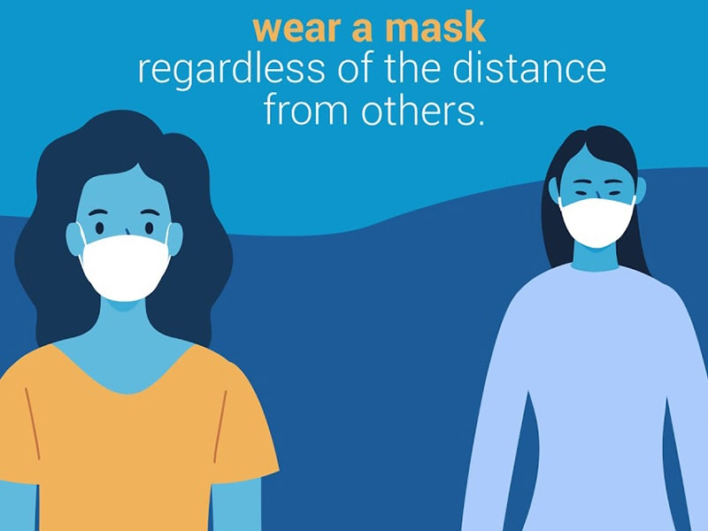
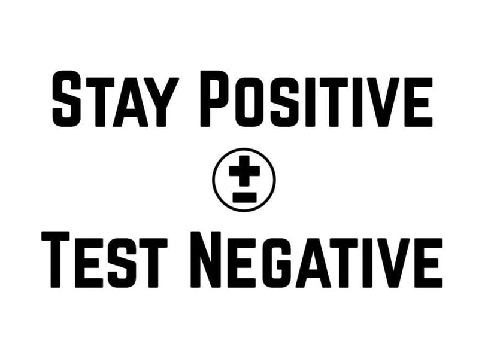

I have tried writing this blog for weeks now. Yet, every time I reach a point, I am reminded that I need to check up on everyone I love because that is how life is now. UNCERTAIN. Before getting into the topic, I just wanted to express my deepest condolences to anyone who has lost someone during this dreadful pandemic. I pray to God to give you the strength to get through this. If you are awaiting a test result, I hope it is negative, if you are searching for resources I pray that you receive them immediately, and if you are looking for vaccination, I hope you get the earliest slot possible.

Earlier this year, our nation witnessed a drop in the number of COVID cases. I was still paranoid, but with the notice of the vaccine coming into play, a teeny tiny part of me did relax. I had all the means to do so. The lockdown was lifted, everyone was going about doing their regular work as they did pre-lockdown, with the only difference being a mask and a couple of drops of sanitizer every now and then. In fact, during this simulation of “normal”, I managed to complete two semesters! It totally justifies the reason I felt secure and almost victorious, might I say, for braving through a pandemic. In hindsight, I must admit I was a bit naive. Naive to imagine that this deadly virus would naturally dissipate into thin air.
The cases started avalanching and there was nothing being implemented to stop or break the chain! That was when I first started getting agitated. The fact that the government didn’t impose any restrictions centrally to break the chain. This is my personal opinion. If you have any different opinions, I respect yours but don’t attack mine. I understand that the reason there wasn’t any lockdown was because of the lowering economy. But is it right to risk the lives of millions over that? I am pretty sure there would be no country if everyone out there was dying or was on the verge of death! What is the point of stockpiling money when there are no citizens who will be benefited! Eventually, every state started imposing lockdowns but it wasn’t until a few days ago that my state, Telangana, decided to do so. Do I personally see any benefit because of the delay in imposing a lockdown? All I see are the people suffering due to these unwise steps. But are they alone to face the firing squad? Absolutely not.
The public was very much aware of the skyrocketing cases, yet they went about partying and ignoring any and all set rules. It makes absolutely no sense as to why one couldn’t stay indoors for their own good but had to go out and possibly risk not just themselves but their loved ones, as well as everyone around them. The people who had no other option but to go out and serve, the frontline heroes, literally begged everyone to stay in their homes for their own safety, and yet, I don’t understand how something as simple as that could float past someone’s head I have no clue why the billboards “Prevention is better than cure” didn’t manage to strike sense in anyone, either. Am I saying I am an absolute saint who didn’t go out at all? No. I did, and I faced the consequences, I had the worst COVID scare and I still count my lucky stars because it was just a scare. So am I being hypocritical? No. Because once I learned from that, I haven’t stepped out of my house at all, unless there was an extreme necessity.

The third party that is responsible for this agitation of mine is the media. God, where do I begin… Absolute misuse of power? That could be a good start, but again that’d be the description for both the government and media, and they wouldn’t like it because they are constantly at odds with each other! At a time when unity is required the most, they couldn’t have been more divided. I am depressed every time I watch the news. They are so vividly describing the lack of amenities and the suffering of common people that I have no option but to tune out. It is definitely taking a toll on my mental health, as I am sure it is for many others. Instead of butting the public against the government, they could have been a more reliable bridge of communication. Instead of showing the lack of amenities, they could have provided verified leads for the same! But no, all I see are arguments every day and every night. The only help they probably offer is reiterating the line “Stay home, stay safe.”. I can’t help but wonder if they are still stuck in March of 2020, somehow. They have the power to instill hope in people, yet all they do is diminish any lingering positive thought. Further, they have made it so that one is scared to ask for help because they assume that will ONLY be scammed. That blows because I see wonderful people coming out to help everyone!

Amidst all this, I still feel a little helpless when I see people tweeting and pleading for any and possibly all resources available. The little bit I could do is probably find them any lead or even send them any link I have which meets their criteria and I highly encourage you to do so, if you haven’t already. Try verifying as many leads as possible, it makes their work easier. I have seen my close friends, family, acquaintances fall prey to this deadly virus. It isn’t easy to see your loved ones go through this turmoil and the guilt is overbearing. Frankly, this is the toughest article I have written because this entire situation has taken a toll on my mind as well. It isn’t easy to look at people dying, gasping for air, crying over the loss of a loved one, begging for resources and aid. I can barely imagine what one going through this must be feeling. In grief, you are alone, but know that you will always have someone out there who will share it with you. If you don’t feel like you can reach out to anyone you know you could reach out to me, We are practically strangers and possibly we can get through this.
Finally, SCREW YOU, COVID. SCREW. YOU.
Praying and hoping for a better tomorrow,
Until next time, with love,
M.